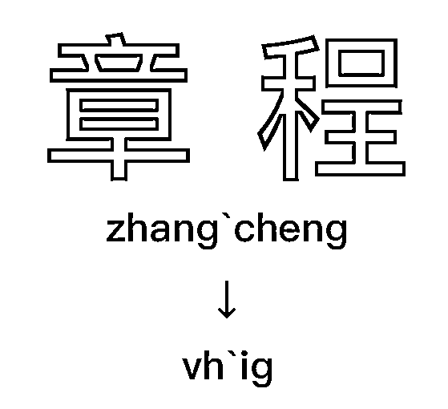
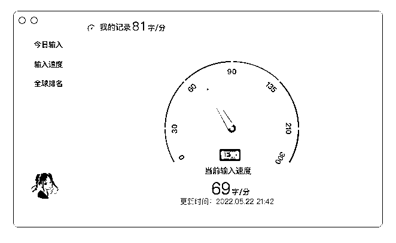
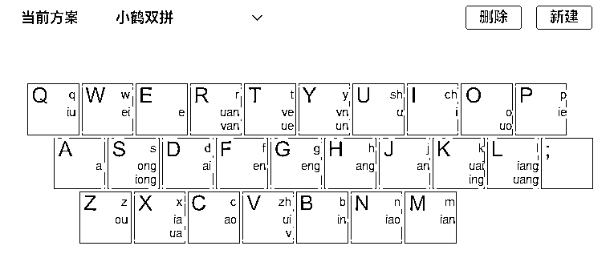
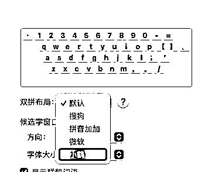
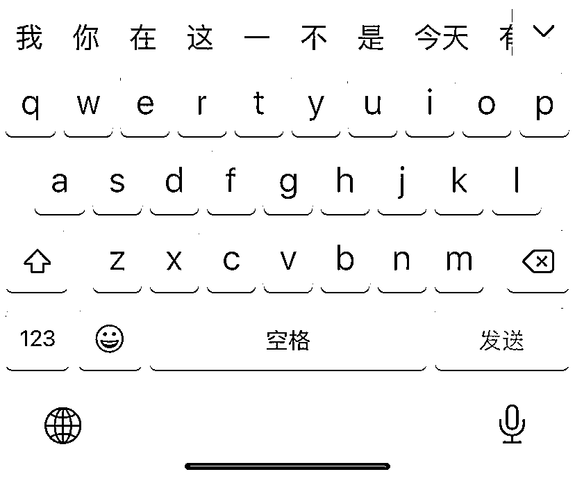
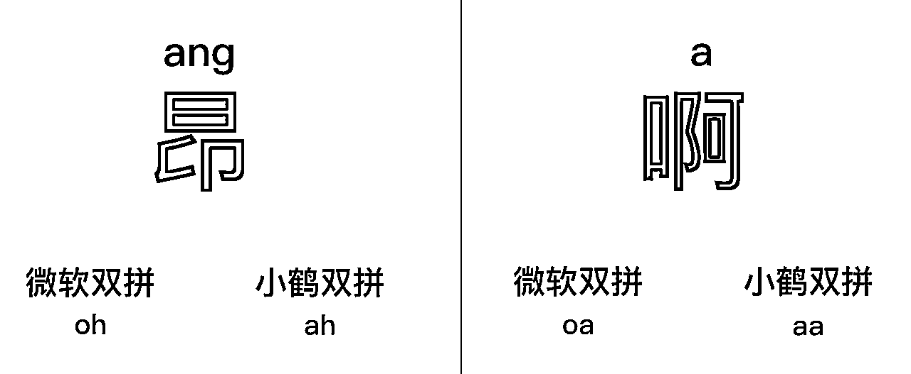
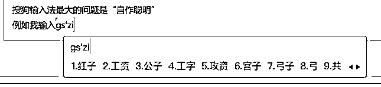
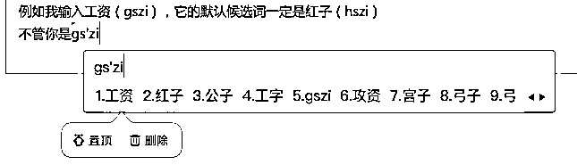
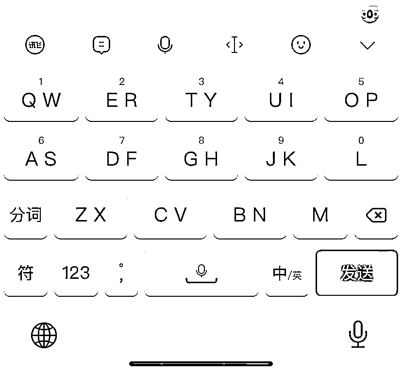
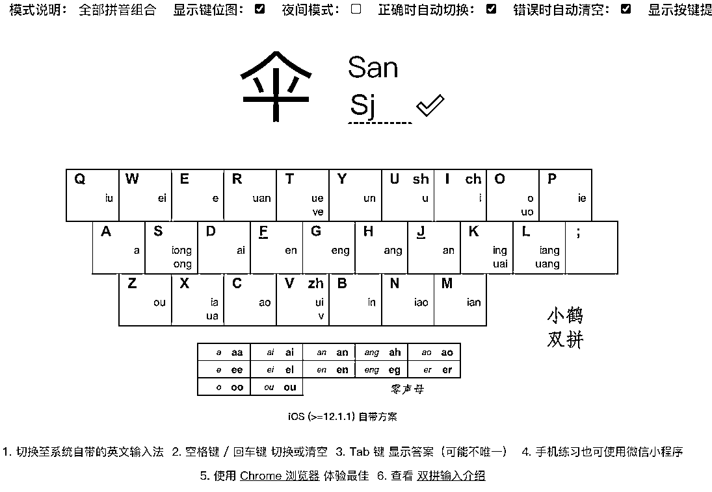

来源：https://yqst.feishu.cn/docx/ODcddHpnqoogiuxw7WqcMbv1nJb
「 输入法也可以更有效率吗？」
输入法在云猫心目中只是基本的输入工具，只要会拼音就会打字。
大部分输入法也都这种实现方式：
安装完成就能开始打字，虽然简单方便，但跟「高效」还是有一段距离。
当云猫听说在基础不过的打字能使用「双拼」提高效率的时候，疑问在脑中出现：
「双拼」如何提升效率？是否上手很麻烦？有什么输入软件可以支持？
双拼输入法比起全拼输入法的优势，在于「敲击次数」上。
和全拼相比，双拼把一个字的「声母」和「韵母」拆分开来；
把每个字的声母韵母分别对应到一个特定的按键上；
使得所有字的拼音只需要「敲击两个字母」就能达到全拼的效果。

如上图所示：全拼输入「zhang`cheng」共敲击 10 次，而双拼只需输入「vh`ig」共敲击 4 次。
相比起全拼，每个词可以「节省 2-6」次的敲击次数，可以让输入更节省时间。
云猫在基本熟练后，打字速度基本在 60 字/分钟保底。
在思路清晰的情况下，80 字/分钟 是完全可以达到的。

在众多双拼方案中，云猫比较推荐「小鹤双拼」

主要原因有以下几点：
早年 iOS/macOS 系统小鹤双拼的缺失是一大遗憾。但随着系统的更新，苹果也加入了对小鹤双拼的支持。
所以现在的小鹤双拼达成了「全平台兼容」：Windows 各家输入法、Android 搜狗、百度、Gboard 以及各家手机厂商内置的输入法，都有很好的支持。

如微软双拼、搜狗双拼，都占用了「；」键作为韵母「ing」的按键。

↑ 失踪的「；」，并没有把需要的「；」键显示在第一页
电脑端 86 键的键盘也不会去省略「；」键；
但到了手机端，屏幕的捉襟见肘就会导致「；」键位置移动或者当场失踪（显示在标点栏里）。
这样会导致无法形成良好的肌肉记忆还额外增加操作步骤。

在微软双拼中「o」作为固定的零声母，所以「昂」拼写「o」为「oh」，「啊」拼写为「oa」。
小鹤双拼将零声母字的「第一个字母」定义为韵母的首字母。
「昂」拼写则为「ah」，「啊」拼写为「aa」，更符合拼音的直觉，也降低上手的难度。
这算是国民级软件了，但搜狗输入法最大的问题是「自作聪明」

例如云猫输入「工资（gs`zi）」，它的默认候选词一定是「红子（hs`zi）」

不管你是把工资这个候选字置顶，或者把红子删除掉都无济于事。
用几个月又会变为红子，从我开始用双拼的时候这个问题就存在。
这么多年云猫也跟搜狗反馈过很多次，问题依然没有解决。
所以使用搜狗的时候要记得，有时候不是你敲的不对，而是它本身有 bug。
百度输入法也有搜狗输入法的这种问题，但把候选字删除后就没再发生过这种情况。
讯飞输入法是云猫比较推荐的输入法。
在拼写方面没有自作聪明的现象，只是词库有点少，有些词需要手动选字。
并且手机端的输入法支持「双键位」模式，可以极大降低全键盘的误触，但会增加重词率。

PS.不过不太建议一开始就用双键的皮肤，会导致键位记忆错乱。
PPS.搜狗输入法作为第三方使用率最高的输入软件，基础联想词等输入相比讯飞更加优秀。只要注意到错的不是我们而是它，用搜狗也并没有太大问题。总之，用你最顺手的输入法先跑起来再说。
1、 我们一起探索了双拼的使用方法，发现一个字只需要敲击两个字母，输入效率会有较大的提升。
2、 我们一起寻找了合适的双拼方案，发现小鹤方案全平台兼容、不占用「；」键，作为了我们的首选。
3、 我们一起测试了好用的输入软件，发现讯飞不会出 bug、支持双键位模式，作为了我们优先推荐。
如果你有整段的时间
那基本「一下午」就能记住大部分的键位，「一至两周」基本熟悉，「一至两月」完全熟练。
如果你只有零散的时间
完全可以最近一段时间，把键位表设为桌面背景、聊天背景；
随时打字，随时查看，基本两周左右你的肌肉就能记住大部分键位。
如果你决定要用双拼要换就当场换掉。
千万不要一会儿用全拼，一会儿用双拼，这样只会导致快速的放弃。
云猫当时就跟身边的人说：
「我最近换了输入法还在适应，打字有点慢，谅解下，如果着急我可以先给你发语音。」
大家也都表示理解，不要有太大的压力。
所以，换上双拼后一定、一定、一定不要再换回全拼！
跳出舒适圈，只需要很小的代价，你就能获得输入效率的提升。
如果你打算来会一会双拼，看看它有几把刷子，那必要的练习也是不可或缺的。
原本小鹤双拼官网有一系列的练习工具，但是用下来有些许不方便。
云猫在这里推荐 BlueSky 开发的双拼练习网站，电脑手机均有支持。

云猫在学习双拼时，使用的是郝海龙老师推荐的「打歌词」方法。
因为大部分歌词都是比较押韵的，你可以选一些你喜欢的歌词来做打字练习。
在这里我们思考一个问题：
未来几年甚至十几年你都花较多的时间在打字上。如果不提升效率，会浪费多少时间在单纯打字上面？
如果现在花不到一个月的零散时间投资到双拼上，未来打出的每一个字都会节省一点时间；
短时间可能感觉不出什么，那么我们把视角拉到以年为单位的时间下；
可以看到积少成多，这一点点的时间投资，将带来非常可观的收益。
尽管双拼输入需要一点点时间来练习，但也远比五笔输入「方便易学」。
双拼输入法是显而易见「提升效率」的工具，并且不像其他效率工具一样，容易使用一段时间就荒废。
双拼输入法你学会了，绝对是一项用了就回不去的「真香」技能。
在这个事事都追求效率的时代，不妨你也换用一下双拼，来体验一下畅快打字的感觉。
以下是生财星球引言，不需要看啦~
在这个追求效率的时代，我推荐你试试「双拼」
各位大佬好，我是云猫，一个划水的小透明。
每天在星球围观的时候，发现星球中对于提升效率的文章少之又少。
常言，时间就是金钱。提升效率=节约时间=节约金钱，所以提升效率也是生财之路嘛~
生财的大部分球友都从事自媒体工作，写作可谓是每天必不可少的一项事情。
在这里我们思考一个问题：
未来几年甚至十几年你都花较多的时间在打字上。如果不提升效率，会浪费多少时间在单纯打字上面？
文章目录如下：
一、 简化的敲击次数，让效率有提升
二、 合适的双拼方案，让输入更顺手
三、 好用的输入软件，让打字不糟心
四、 下定决心，就要说换就换
五、 手握利器，更要勤于练习
详细内容，移步飞书阅读